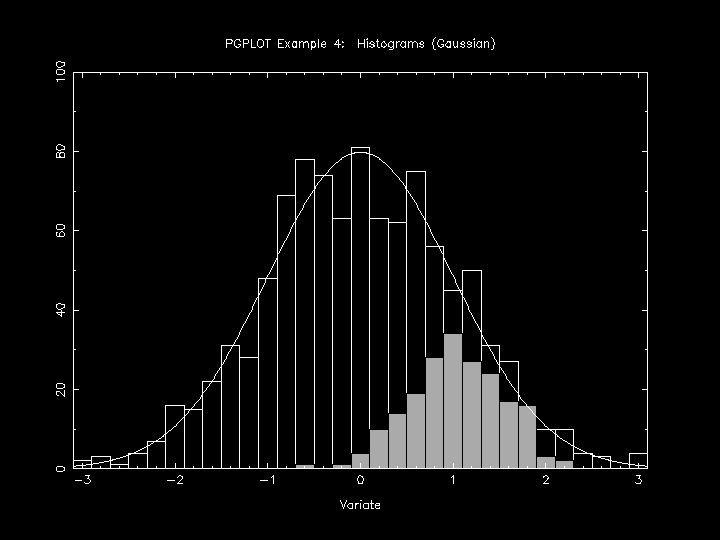

require 'narray'
require 'pgplot'
include Pgplot
pgopen
srand(1)
# draw main Histogram of Normal distribution
data = NArray.sfloat(1000).randomn!
pghist(data, 31, -3.1..3.1, 0)
# draw sub Histogram of Normal distribution with gray bars
data = NArray.sfloat(200).randomn!*0.5 + 1
pgsci(15)
pghist(data, 31, -3.1..3.1, 3)
pgsci(0) # draw black frame
pghist(data, 31, -3.1..3.1, 1)
pgsci(1)
pgbox('BST', 0.0, 0, ' ', 0.0, 0)
pglab('Variate', ' ','PGPLOT Example 4: Histograms (Gaussian)')
# draw Gaussian Curve
x = NArray.sfloat(620).indgen!*0.01 - 3.1
y = NMath.exp(-(x**2)*0.5) * (0.2*1000/NMath.sqrt(2*Math::PI))
pgline(x,y)
